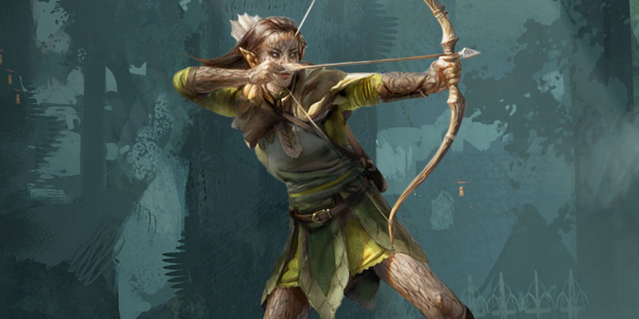

Dons (armes & outils)
Ce mois-ci, Unearthed Arcana propose de nouveaux dons.
Dons de maîtrise d'arme
Jetons un coup d’œil à la conception des dons en prenant des exemples. Je pense qu'il serait sympa de créer une série de dons qui accordent aux personnages l'expertise d'armes spécifiques, de manière similaire à la façon dont fonctionne Spécialiste des armes d'hast. Qu'est-ce que cela pourrait donner ?
Spécialiste des marteaux de guerre [version incorrecte]
SPÉCIALISTE DES MARTEAUX DE GUERRE
Ce premier don pour des personnages qui utilisent un marteau de guerre a de gros problèmes. D'abord, cela déclenche des jets de dés supplémentaires chaque fois qu'un personnage attaque. Irritant à bas niveaux, cela peut rapidement dégénérer à haut niveaux avec de multiples attaques. La capacité à frapper le bouclier d'un adversaire est astucieuse, mais c'est quelque chose que tout personnage devrait être en mesure d'essayer. Et verrouiller cela dans un don menace de limiter la flexibilité du jeu. En fait, chaque MD devrait pouvoir se prononcer sur cette manœuvre, plutôt que de ballonner le jeu avec des règles compliquées. Enfin, ce don est assez limité. Il ne fonctionne qu'avec une seule arme, alors que son effet pourrait probablement s'appliquer à presque toutes les armes contondantes. BIEN EN MAIN propose une meilleure version de ce don.
SPÉCIALISTE DES LAMES
Le bonus aux jets d'attaque reflète l'idée que vous êtes plus à l'aise avec des lames qu¡avec d'autres armes, et cela d'une manière simple qu'il ne ralentit pas le jeu. Le deuxième avantage tente de refléter l'idée qu'une épée est une bonne arme défensive, par rapport aux haches, aux marteaux, etc. En se concentrant sur la défense plutôt que de guetter l'occasion de contre-attaquer, cela vous rend plus difficile à atteindre. Le dernier avantage est un contraste avec le fait de parer. Si vous renoncez aux capacités défensives de votre épée, vous pouvez frapper rapidement et plus efficacement en prenant avantage de la distraction d'un ennemi.
SPÉCIALISTE DES FLÉAUX D'ARMES
La version épée de ce don est assez générique dans sa conception, car elle doit pouvoir s'appliquer à un large éventail de joueurs. Cela signifie que les autres dons peuvent faire appel aux joueurs qui recherchent quelque chose d'un peu plus ésotérique. Spécialiste des fléaux d'armes se focalise donc aussi dans la neutralisation des boucliers et dans le fait d'essayer de faire tomber à terre les adversaires, en jouant avec la capacité d'un fléau à fouetter un objet ou à enchevêtrer les jambes d'un ennemi.
SPÉCIALISTE DES LANCES
Ce don met l'accent sur une arme courante. Il accorde le même bonus de +1 aux jets d'attaque, mais il renforce aussi les dégâts de la lance pour la rendre égale à des armes de guerre. Le troisième élément vise à faire de la lance une arme défensive. Comme à D&D 5 il n'y a pas d'action spécifique pour charger, ce don exige qu'un adversaire se déplace vers vous sur une distance notable. Éviter votre attaque avec Se désengager permet à une créature de s'approcher avec précaution si elle renonce à son action Attaquer, de même que vous obliger à engager un adversaire spécifique rend l'avantage plus rapide à résoudre (pas besoin de vérifier si vous voulez attaquer toutes les créatures qui vous chargent). L'allonge supplémentaire est une capacité mineure qui reflète la nature de la lance d'une manière simple et facile.
Quand vous frappez une créature avec un marteau de guerre, celle-ci doit réussir un jet de sauvegarde de Force (DD 8 + votre bonus de maîtrise + votre modificateur de Force) ou être mise à terre.
En outre, vous pouvez utiliser votre marteau de guerre pour faire voler le bouclier d'un ennemi. Si vous touchez une créature qui utilise un bouclier, vous pouvez faire en sorte que l'attaque n'inflige pas de dommage mais force la créature à lâcher son bouclier.
Bien en main
Vous maîtrisez la hachette, la hache d'armes, la hache à deux mains, le marteau de guerre et le maillet. Vous gagnez les avantages suivants lorsque vous utilisez l'un d'eux:
- Vous gagnez un bonus de +1 aux jets d'attaque que vous effectuez avec l'arme.
- Chaque fois que vous avez un avantage à un jet d'attaque au corps à corps réalisé avec l'arme et que vous touchez, vous pouvez mettre à terre la cible si le plus faible des deux d20 aurait aussi touché la cible.
- Chaque fois que vous avez un désavantage à un jet d'attaque au corps à corps réalisé avec l'arme, la cible prend des dégâts contondants égaux à votre modificateur de Force (minimum 0) si l'attaque rate, mais que le plus élevé des deux d20 aurait touché.
- Si vous utilisez l'action Aider pour soutenir l'attaque au corps à corps d'un allié alors que vous brandissez l'arme, vous mettez le bouclier de la cible momentanément de côté. En plus d'un avantage à son jet d'attaque, l'allié gagne un bonus de +2 au jet si la cible utilise un bouclier.
Spécialiste des lames
Vous maîtrisez l'épée courte, l'épée longue, le cimeterre, la rapière et l'épée à deux mains. Vous gagnez les avantages suivants lorsque vous utilisez l'une de ces armes :
- Vous gagnez un bonus de +1 aux jets d'attaque que vous effectuez avec l'arme.
- À votre tour, vous pouvez utiliser votre réaction pour parer, pourvu que vous ayez l'arme en main. Cela vous accorde un bonus de +1 à votre CA jusqu'au début de votre prochain tour, ou jusqu'à ce que vous ne teniez plus l'arme en main.
- Lorsque vous effectuez une attaque d'opportunité avec l'arme, vous avez un avantage au jet d'attaque.
Spécialiste des fléaux d'armes
Le fléau est une arme difficile à manier, mais vous avez passé d'innombrables heures pour le maîtriser. Vous gagnez les avantages suivants :
- Vous gagnez un bonus de +1 aux jets d'attaque que vous effectuez avec un fléau d'armes.
- Par action bonus à votre tour, vous pouvez vous préparer à lancer votre fléau d'armes pour balayer les boucliers de vos cibles. Jusqu'à la fin de ce tour, vos jets d'attaque avec un fléau d'armes bénéficient d'un bonus de +2 contre toute cible qui utilise un bouclier.
- Lorsque vous touchez avec une attaque d'opportunité réalisée avec un fléau d'armes, la cible doit réussir un jet de sauvegarde de Force (DD 8 + votre bonus de maîtrise + votre modificateur de Force) ou être mise à terre.
Spécialiste des lances
Bien que le maniement de la lance soit simple à apprendre, vous être récompensé pour le temps que vous avez passé à la maîtriser. Vous gagnez les avantages suivants :
- Vous gagnez un bonus de +1 aux jets d'attaque que vous effectuez avec une lance.
- Lorsque vous utilisez une lance, ses dés de dégâts passent d'un d6 à un d8, et d'un d8 à un d10 lorsqu'elle est maniée à deux mains (cet avantage n'a aucun effet si une autre capacité a déjà amélioré les dés de l'arme).
- Vous pouvez positionner votre lance pour recevoir une charge. Par une action bonus, choisissez une créature que vous pouvez voir et qui se trouve au moins à 7,50 mètres de vous. Si cette créature se déplace à portée de votre lance lors de son prochain tour, vous pouvez réaliser une attaque au corps à corps contre elle avec votre lance en tant que réaction. Si l'attaque touche, la cible subit 1d8 dégâts perforants supplémentaires, ou 1d10 dégâts perforants supplémentaires si vous maniez la lance à deux mains. Vous ne pouvez pas utiliser cette capacité si la créature utilise l'action Se désengager avant de bouger.
- Par une action bonus à votre tour, vous pouvez augmenter votre allonge avec une lance de 1,50 mètre pour le reste de votre tour.
Dons relatifs aux outils
Les armes c'est sympa, mais les dons sont destinés à soutenir toutes les parties du jeu. À cette fin, voici quelques dons qui accordent la maîtrise d'outils et d'avantages thématiques supplémentaires.
Alchimiste
DONS RELATIFS AUX OUTILS
Les outils sont une partie amusante du jeu, mais il faut parfois beaucoup de travail de la part d'un MD pour les mettre en valeur. Par exemple, les ustensiles de cuisine ne sont utiles que si l'aventure ou la campagne le permet, car ils ne jouent pas un rôle clair dans les trois piliers de base du jeu : le combat, l'interaction et l'exploration.
Alors, en plus d'augmenter nettement le bonus numérique fourni par des outils, ces dons tentent d'ajouter des avantages concrets. Les outils de voleur sont une exception, cependant, car les pièges et les serrures font tellement partie du jeu que le bonus supplémentaire que le don fournit est assez puissant en soi.
Vous avez étudié les secrets de l'alchimie et êtes un expert dans sa pratique, ce qui vous donne les avantages suivants :
- Augmentez votre valeur d'Intelligence de +1, jusqu'à un maximum de 20.
- Vous gagnez la maîtrise du matériel d'alchimiste. Si vous le maîtrisez déjà, vous ajoutez le double de votre bonus de maîtrise aux jets que vous faîtes avec lui.
- Par une action, vous pouvez identifier une potion à 1,50 mètre ou moins de vous, comme si vous l'aviez goûté. Vous devez voir le liquide pour que cet avantage fonctionne.
- Au cours de tout repos court, vous pouvez améliorer temporairement la puissance d'une potion de guérison, quelle que soit sa rareté. Pour utiliser cet avantage, vous devez avoir le matériel d'alchimiste avec vous, et la potion doit être à portée de main. Si la potion est bue moins d'une heure après la fin du repos court, la créature qui boit la potion peut renoncer à lancer les dés de la potion et récupérer le maximum de points de vie que la potion peut restaurer.
Cambrioleur
Vous vous vantez de votre rapidité et de votre connaissance approfondie de certaines activités clandestines. Vous gagnez les avantages suivants :
- Augmentez votre valeur de Dextérité de +1, jusqu'à un maximum de 20.
- Vous gagnez la maîtrise des outils de voleur. Si vous les maîtrisez déjà, vous ajoutez le double de votre bonus de maîtrise aux jets que vous faîtes avec eux.
Gourmand
Vous maîtrisez de nombreuses recettes spéciales, ce qui vous permet de préparer des plats exotiques avec des effets utiles. Vous gagnez les avantages suivants :
- Augmentez votre valeur de Constitution de +1, jusqu'à un maximum de 20.
- Vous gagnez la maîtrise des ustensiles de cuisine. Si vous les maîtrisez déjà, vous ajoutez le double de votre bonus de maîtrise aux jets que vous faîtes avec eux.
- Par une action, vous pouvez inspecter un verre ou une assiette de nourriture qui se trouve à 1,50 mètre ou moins de vous et déterminer s'il est empoisonné, à condition que vous puissiez le voir et le sentir.
- Pendant un repos long, vous pouvez préparer et servir un repas qui vous aidera, vous et vos alliés, à récupérer des rigueurs de l'aventure, à condition que vous ayez de la nourriture appropriée, des ustensiles de cuisine et d'autres fournitures en main. Le repas nourrit jusqu'à six personnes, et chaque personne qui mange récupère deux dés de vie supplémentaires à la fin du repos long. En outre, ceux qui participent au repas ont un avantage aux jets de sauvegarde de Constitution contre la maladie pour les prochaines 24 heures.
Maître du déguisement
Vous avez aiguisé votre capacité à façonner votre personnalité et à lire la personnalité des autres. Vous gagnez les avantages suivants :
- Augmentez votre valeur de Charisme de +1, jusqu'à un maximum de 20.
- Vous gagnez la maîtrise du kit de déguisement. Si vous le maîtrisez déjà, vous ajoutez le double de votre bonus de maîtrise aux jets que vous faîtes avec lui.
- Si vous passez 1 heure à observer une créature, vous pouvez alors ensuite passer 8 heures pour confectionner un déguisement que vous pouvez rapidement enfiler pour imiter cette créature. Faire le déguisement nécessite un kit de déguisement. Vous devez effectuer les jets pour vous déguiser normalement, mais vous pouvez vous déguiser en une action.

Écrit par Mike Mearls, traduit par blueace